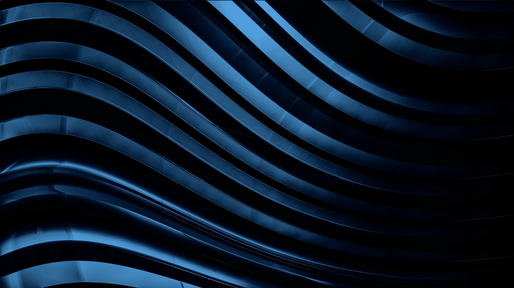
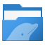
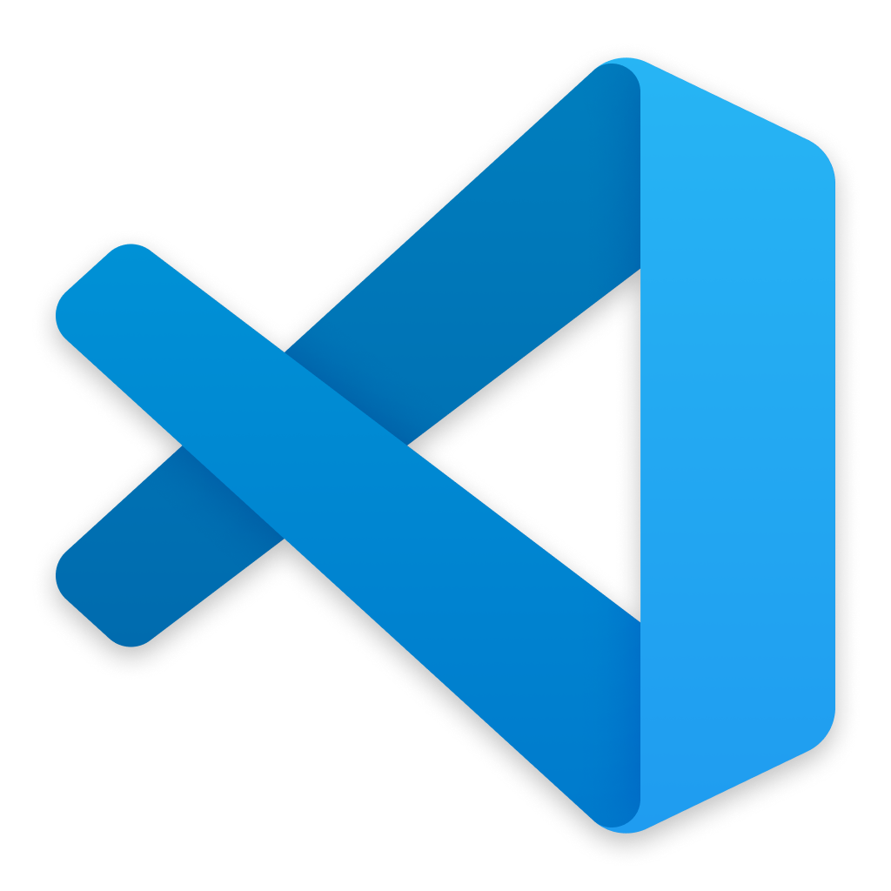
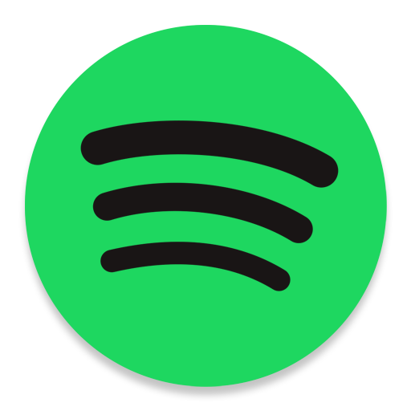

OpenCopySearch files
Aurorae titlebar
Monochrome window buttons that match the dock.

Dockyard is a dock and matching theme for KDE Plasma 6. It runs inside plasmashell, with nothing extra to keep running.



The Glass Plasma style carries the dock's frosted dark material to panels, notifications, tooltips and popups. One switch in the dock's settings makes all of it solid.
A color scheme, a Kvantum widget style, an Aurorae titlebar and a look-and-feel package that ties them to the Glass Plasma style. One flag installs them, and one script puts your old choices back.
Monochrome window buttons that match the dock.
Solid windows with glass menus and tooltips. The script applies Dockyard. For translucent windows, pick DockyardGlass in Kvantum Manager.
./install-all.sh --apply-global
# to undo later:
theme/restore-global.shThe script applies the package and picks the Kvantum theme, which a look-and-feel package cannot set. Your current choices are saved first, so the restore script can put them back.
git clone https://github.com/aryansoni57/dockyard
cd dockyard
./install-all.sh --apply-themeThen add Dockyard to a panel from Add Widgets.
Needs KDE Plasma 6. Dockyard uses some private Plasma APIs, so a Plasma update can break it.